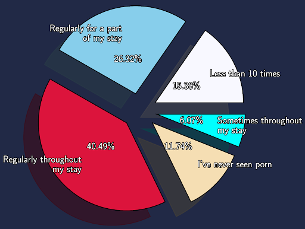
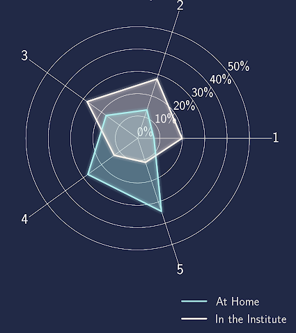

Personal
Sex Ratio at Campus

How close were you to your family while at college?


Which region would you call your Native Place
How many people have you had a relationship with, during your stay in the institute?

How frequently did you watch porn at IIT? 
How would you prefer to live after leaving the institute?
Sexual orientation

How socially active were you in the institute?
How socially active were you in the institute?


How disciplined and regular were you on a scale of 1-5 in the following aspects at home/ in the institute? (i) Food

(ii) Mental Care

(iii) Physical Health

(iv) Productivity
(v) Productivity 


Did you face any language barrier issues? If yes, how were you able to resolve it or manage to work through it?